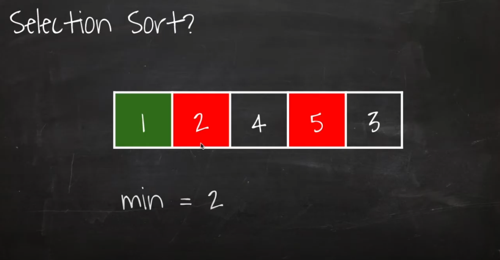
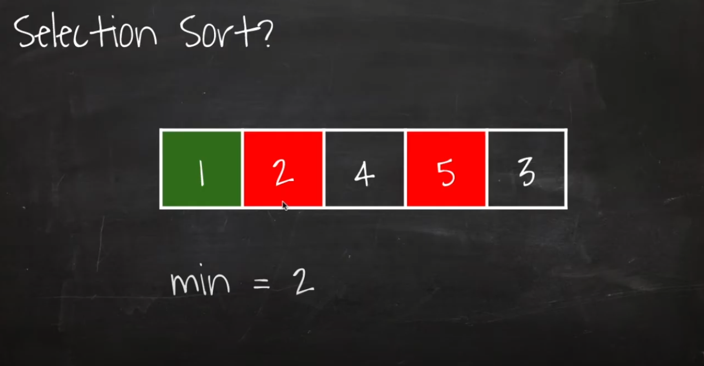

선택정렬
선택정렬은 전체 모든 아이템을 스캔함
삽입정렬은 선택정렬보다 빠름.
삽입정렬은 필요한 아이템만 스캔을 하기 때문.
하지만 선택정렬과 삽입정렬의 시간복잡도는 동일하게 O(n^2)임

 


참고 : https://www.youtube.com/watch?v=Bor_CRWEIXo
참고 : https://www.youtube.com/watch?v=uCUu3fF5Dws